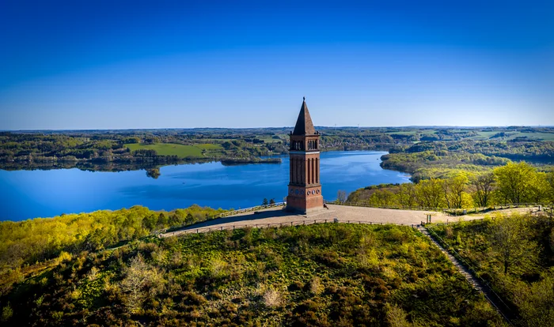
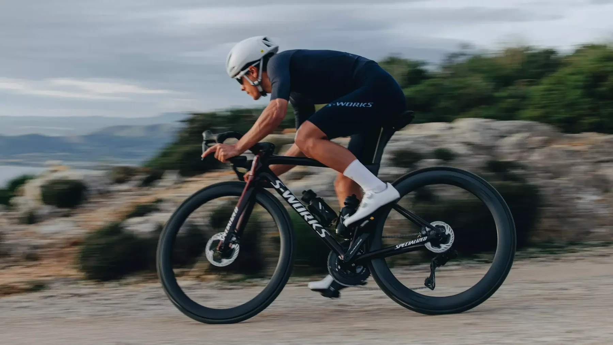
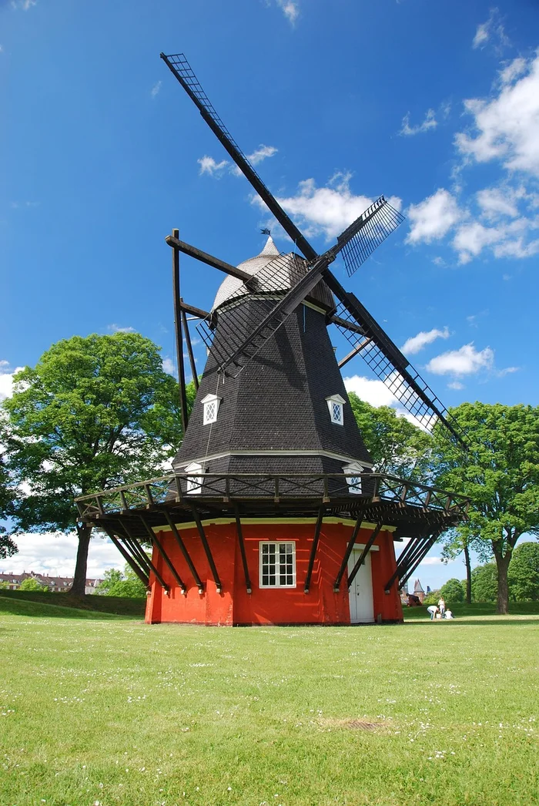
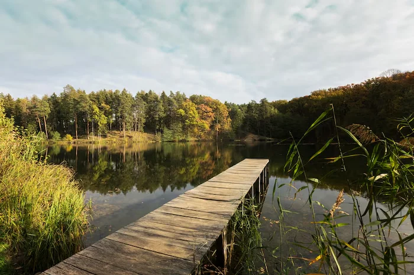

Kysten rundt
Åbne vidder og udsigt til vandet.
Sådan planlægger du turen
Vælg en kort strækning langs kysten med asfalt og overskuelig trafik. Tjek vinden, og undgå en lang hjemtur i modvind. Vend om, mens du stadig har overskud.

Med den rette forberedelse kan din første landevejstur blive en god oplevelse. Her guider vi dig fra planlægning af rute til tips undervejs.
Dine valg gemmes kun i denne browser. Du kan altid fjerne krydserne igen.
Tre idéer til en tur i dit nærområde. Billederne er inspiration og viser ikke dokumenterede ruter. Vælg selv en kort, overskuelig rute med et underlag og en trafikmængde, du er tryg ved.

Åbne vidder og udsigt til vandet.
Vælg en kort strækning langs kysten med asfalt og overskuelig trafik. Tjek vinden, og undgå en lang hjemtur i modvind. Vend om, mens du stadig har overskud.

Små veje og en pause undervejs.
Find en kort sløjfe mellem steder, du kender. Se efter rolige, asfalterede veje, og planlæg en pause. Undersøg trafikken og krydsene, før du kører.

Grønne omgivelser i dit eget tempo.
Vælg asfalterede veje nær skov eller sø. Kontrollér underlaget, så du ikke ender på løst grus med smalle dæk. Vælg en rute med mulighed for at forkorte turen.
Før turen
Vælg en kort og gerne flad tur tæt på hjemmet. En rute, hvor du kan vende om, gør det nemt at tilpasse turen til dagsformen.
Gem ruten, så du kan finde hjem uden mobildækning.
På turen
Start roligt med et tempo, hvor du har overskud. Hold pauser, drik undervejs, og vend hjem før turen føles for lang.
Efter turen
Overvej, hvad der føltes godt, og hvad der skal justeres. Var sadlen behagelig? Havde du vand nok? Passede ruten til dig?
Den næste tur må gerne ligne den første. Du kan øge længden lidt ad gangen, når du føler dig klar.
Se råd til cyklens pleje